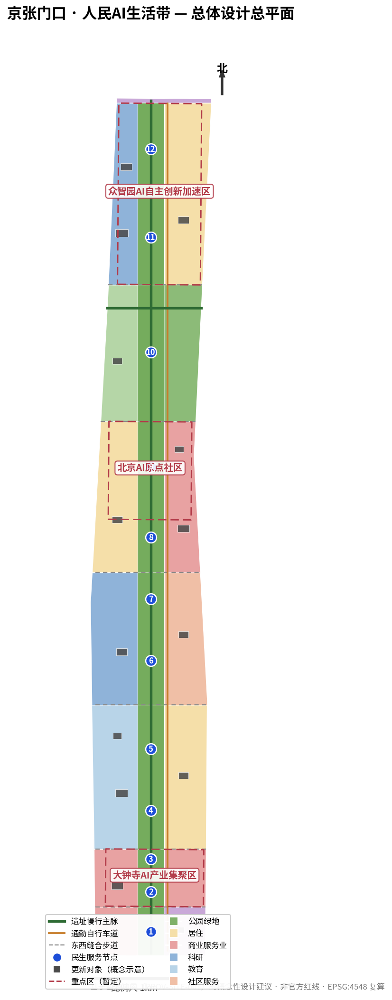
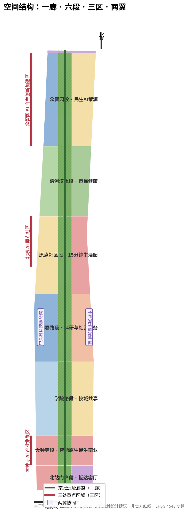
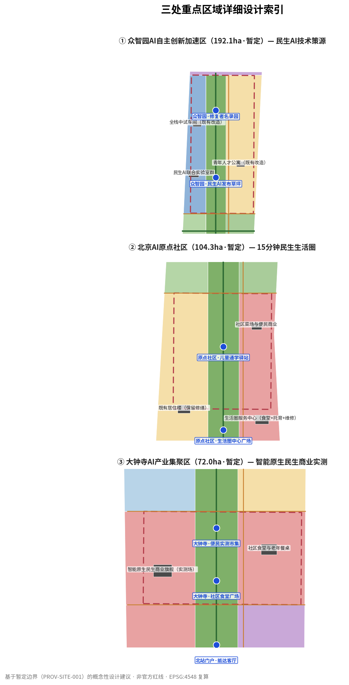
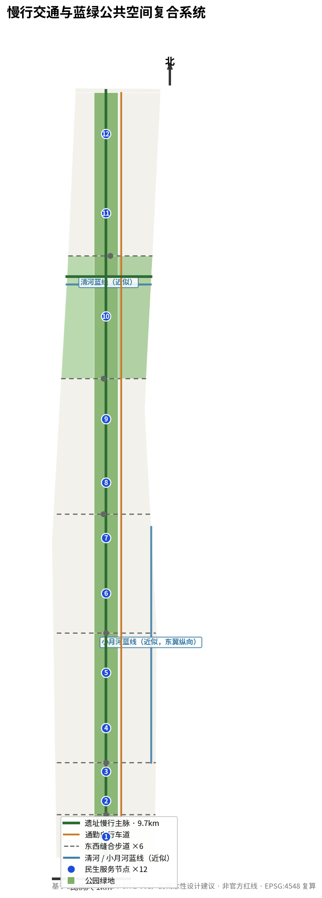
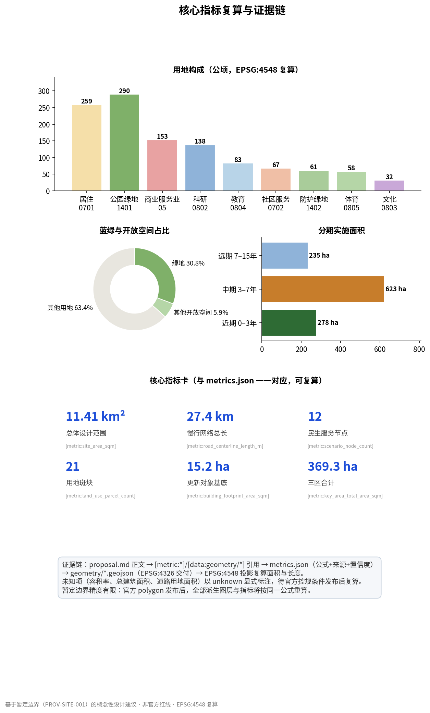

京张门口 · 人民AI生活带——民生问题驱动的百年京张AI创新带城市设计
不做宏大叙事。本方案以沿线居民的真实民生问题清单为设计起点，用「问题拉动」代替「技术推动」，把 9.7 公里京张遗址廊道组织为一条 15 分钟可达的人民 AI 生活服务带：12 处民生服务节点、13 张 AI 场景卡、21 个用地斑块全部落图，全部指标可在 EPSG:4548 下复算。
京张门口 · 人民AI生活带
一句话主张：这条创新带不需要又一个宏大叙事。它需要的是回答沿线居民每天都在问的问题——上班怎么更快、老人在家安不安全、孩子上学放不放心、报修多久有人来。本方案把这些问题变成设计任务书，让 AI 从被展示的标本变成在门口就能用到的工具。来源
设计依据与资料清单
本方案仅使用公开或已清权资料。正式依据包括：官方公告（项目名称、三层范围、公告面积与文字四至、设计任务）、面向智能体任务书（六项 agent 任务、共创原则与禁止越界条款）以及专业标准的本地快照；临时依据为仓库提供的暂定边界多边形；背景导航层为 Agent 事实包 来源来源来源。
资料可用性严格按公开来源登记库分级执行：formal 可用来源支撑正式结论，背景来源仅作背景，provisional 来源仅用于概念生成与自检 来源。本方案不使用任何非公开规划图件、内部控制指标或个人信息；涉及建设强度、建筑高度、道路线位、土地权属的表述均为概念建议，供专业团队深化，不构成审定结论。
案例研究引用的国际对标数据（详见"统筹研究范围产业与未来城市研究"章）来自公开渠道，已标注核实状态；凡未能交叉验证的数字，正文均不作为决策依据，仅作量级参考。

三层范围工作框架
- 统筹研究范围（43.6 km²）：北至北五环路、东至京藏高速、南至西直门外大街、西至万泉河路。本层承担产业与未来城市研究：民生问题图谱、AI 创新生态组织与三区两翼协同机制 来源。
- 总体设计范围（11.4 km²）：以京张遗址公园周边 1–2 公里城市地区为界。本层达到控规深度城市设计：用地分区、更新框架、慢行与蓝绿系统、分期计划。复算面积 指标 与公告值 11.4 km² 一致。
- 重点区域范围（368.4 ha）：众智园 AI 自主创新加速区（192.1 ha）、北京 AI 原点社区（104.3 ha）、大钟寺 AI 产业集聚区（72.0 ha），分别达到规划综合实施方案深度 空间数据空间数据空间数据。
三层范围的几何目前均为暂定多边形（provisional），精度有限、不得作为官方红线或精确面积依据 来源。官方 polygon 发布后，用地分区、绿地与公共空间、分期范围与全部派生指标将按 metrics.json 中的同一公式重算；本方案的所有面积结论仅对当前暂定几何成立 深度。

统筹研究范围产业与未来城市研究
命名与识别：京张门口
主名称「京张门口」（The Jingzhang Doorstep），副标题人民 AI 生活带。命名逻辑：对居民而言，一项技术的好坏不取决于它多先进，而取决于它离自家门口有多近。Logo 方向：以「门」字外形与铁路轨距断面同构——两根竖线是钢轨，横折是家门；主色采用暖橙色（民生温度）而非科技蓝，辅助色取遗址公园绿。导视与标识系统沿用同一套"门口"语汇：每个民生服务节点都叫「XX 门口」——食堂门口、学堂门口、驿站门口。命名不与任何既有城市、园区或企业名称重复，不使用未授权字体、商标与人物形象 来源。
三大定位、五大功能、三区两翼的民生转译
三大定位逐条落实为可检验的民生承诺：百年京张文化带——纪念的不只是工程奇迹，更是詹天佑"修一条中国人自己的铁路"的实干传统，今天体现为"解决一个是一个"的问题清单；都市 AI 生活体验带——体验的主角是居民而非游客，15 分钟生活圈内可感知的 AI 服务密度是核心指标；AI 融合创新带——创新以民生问题为入口，真实需求就是最全栈的测试题 来源。
五大功能按"问题→工具→场景"重组：AI 全栈自主创新体系在众智园回答"工具从哪来"；世界级 AI 创新生态回答"谁来造"；AI+ 场景赋能新范式回答"怎么用"；智能化 AI 活力城市回答"用起来什么感觉"；AI 治理全球话语权在本方案中具体化为"民生 AI 的人工复核与隐私边界规则"——一套可被其他城市抄走的作业。
三区两翼协同回路：众智园（造工具）→ 原点社区（用工具）→ 大钟寺（工具变生意）→ 中关村科技服务翼（把验证过的服务标准化输出）→ 小月河场景赋能翼（把社区场景开放给更多开发者）→ 新问题回流众智园。回路闭环的判据不是产值，而是民生问题解决率。
全球案例对标：7 个案例，只学机制不学口号
| 案例 | 核心机制 | 对京张门口的迁移 |
|---|---|---|
| 波士顿 Kendall Square | 校企共生、实验室紧邻社区 | 众智园实验室向社区开放"问题池" |
| 伦敦 King's Cross | 铁路遗产活化与科技总部混合 | 遗址廊道不做博物馆，做生活基础设施 |
| 纽约 High Line | 线性遗产公园的公共运营 | 慢行主脉的常态化公共活动运营 |
| 巴塞罗那 22@ | 工业区混合用地更新 | 大钟寺"商业+研发+居住"混合实测 |
| 斯坦福研究园 | 低密园区产研转化 | 中试车间邻近研发，缩短验证链 |
| 深圳湾科技生态园 | 政府引导与企业集聚、人才配套 | 人才公寓与民生服务同步供给 |
| 上海张江科学城 | 科学城指标体系化治理 | 以可复算指标管理创新带迭代 |
七项对标中，本方案刻意回避"第二个硅谷"式宏大类比：这些案例真正可迁移的都是机制（问题池、混合用地、运营主体、指标体系），而不是体量与名声。案例数据均来自公开渠道，部分口径随年份变化，仅作机制参考不作精确引用 深度。
八要素配置机制的民生排序
土地、空间、产业、资金、人才、算力、数据、场景八种要素，本方案给出明确的配置优先级：场景 > 数据 > 人才 > 空间 > 产业 > 算力 > 资金 > 土地。理由：民生场景是需求的来源，数据是场景的副产品，人才因"问题值得解决"而留下——这与以土地和资金起手的传统园区逻辑相反，正是"人民 AI"的产业组织方式。
总体设计范围城市更新与控规深度城市设计
空间结构：一廊六段
以京张遗址廊道为中脊（一廊），自南向北组织七个功能段：北站门户段（抵达服务）、大钟寺段（民生商业实测）、学院路段（校城共享）、知春路段（科研与社区服务）、原点社区段（15 分钟生活圈核心）、清河滨水段（市民健康）与众智园段（民生 AI 策源）空间数据。廊道两侧各 1–2 公里为服务腹地，六条东西向缝合步道把被铁路割裂的街区重新连起来 空间数据。
用地分区与更新框架
用地分区为完整无重叠的概念性切分，共 21 个斑块：居住（0701）258.8 ha、公园绿地（1401）289.9 ha、商业服务业（05）153.0 ha、科研（0802）138.3 ha、教育（0804）83.1 ha、社区服务（0702）67.5 ha，其余为防护绿地、体育与文化用地 指标指标指标。居住与社区服务合计约 326 ha、占全线 28.6%，为最高功能组团——这不是产业园配宿舍的逻辑，而是生活区配产业的逻辑 深度。
更新策略为"留改为主、慎拆少建"：16 处概念性更新对象中，保留修缮 4 处、改造提升 10 处、新建仅 2 处（民生 AI 联合实验室群与全栈中试车间，均位于众智园）空间数据。所有建筑基底均为示意，不针对具体权属地块，不构成拆改留结论 深度。
控规条件的诚实处理
容积率、建筑高度、建筑密度、绿地率、退线等法定控规条件不在公开场地包内，本方案一律记为未知（unknown），不给出强度结论 指标。概念层面的强度讨论（如众智园作为唯一新增建设集中区）仅为方向性建议，待正式控规条件发布后复算 深度。
重点区域详细设计
① 众智园 AI 自主创新加速区（192.1 ha，暂定）——民生 AI 技术策源
定位：全线唯一以新增建设承载的功能区，任务是"为民生问题造工具"。空间结构：西翼科研集中布局民生 AI 联合实验室群与全栈中试车间，东翼人才公寓混合居住，中廊为遗址公园与发布草坪 空间数据。建筑更新：新建 2 处、改造 1 处（BLDG-01/02/03）。交通慢行：慢行主脉北端终点，衔接清河滨水绿道 空间数据。公共空间：民生 AI 发布草坪（PS-11）与修复者名录园（PS-12）。AI 场景：S07 报修响应与 S12 家政机器人实测的技术策源地。实施风险：新建体量依赖控规确认，列为前置条件 深度。
② 北京 AI 原点社区（104.3 ha，暂定）——15 分钟民生生活圈
定位：全线的"主战场"，回答"AI 如何让日常生活更好"。空间结构：西翼居住混合、东翼社区商业与生活圈中心、中廊遗址公园 空间数据。建筑更新：生活圈服务中心（食堂+托育+维修一站集成，BLDG-06）、社区菜场（BLDG-07）、既有居住保留修缮（BLDG-05）。交通慢行：东西缝合步道最密段落，儿童通学路径全覆盖。公共空间：生活圈中心广场（PS-08）、儿童通学驿站（PS-09）。AI 场景：S02 居家守护、S03 通学守护、S08 智能配餐、S12 家政机器人实测。实施风险：社区场景依赖居民授权与物业协同，需先建立议事机制再部署设备。
③ 大钟寺 AI 产业集聚区（72.0 ha，暂定）——智能原生民生商业实测
定位：回答"AI 服务如何变成可持续的生意"，让民生服务不靠补贴活下去。空间结构：西翼智能原生民生商业实测街、东翼社区便民商业、中廊遗址公园大钟寺段 空间数据。建筑更新：民生商业旗舰（BLDG-13）、社区食堂与老年餐桌（BLDG-14）。公共空间：社区食堂广场（PS-02）、便民实测市集（PS-03）。AI 场景：S11 无人配送最后 100 米、S06 法律援助初审。实施风险：商业实测涉及食品安全、劳动与消防合规，试点协议须逐项过审。

AI 创新生态、人才画像与 AI+ 场景
用户画像：六类真实的人
| 画像 | 一天的痛点 | 对应场景 |
|---|---|---|
| 带孩子的母亲（原点社区） | 接送与托育时间冲突 | S03、S08 |
| 独居老人（知春路） | 居家安全与慢病管理 | S02、S01 |
| 残障通勤者（全线） | 接驳断点与无障碍信息缺失 | S04 |
| 夜班劳动者（大钟寺） | 夜间出行与夜间就餐 | S04、S08 |
| 快递员与骑手（全线） | 最后 100 米交付难 | S11 |
| 社区小商户（大钟寺） | 数字化门槛高、客流不稳 | S06、S11 |
画像基于公开的人口结构与社区治理常识构建，未使用任何个人数据；落地前需以社区调研核实 来源。
十三张场景卡
每张场景卡遵循同一格式：问题 → AI 解法 → 空间落位 → 数据与隐私边界 → 人工复核 → 运营主体 → 效果指标 → 退出条件。全部场景为概念建议；测试类场景须经主管部门与社区议事会双批准后方可试点。
1. S01 社区慢病管理（AI+医疗）：慢病复诊开药排队久 → 社区健康档案与预问诊分诊 → PS-10 与 BLDG-04 → 健康数据不出社区边缘节点，脱敏后汇总 → 医生终审处方 → 社区卫生服务中心运营 → 复诊等待时间下降 → 数据授权到期自动删除。 2. S02 独居老人居家守护（AI+养老）：子女不在身边 → 水电气异常与毫米波（非摄像头）跌倒检测 → B05 居住斑块 → 不采集音视频，原始数据不出户 → 异常先呼本人再呼家属与社工 → 街道与物业联动 → 响应时长、误报率 → 老人或其监护人一键退出。 3. S03 儿童通学守护（AI+教育/安全）：通学路径人车混行 → 路径风险热力图与护学岗调度 → PS-09 与缝合步道 → 不做人脸识别，只做流量计数 → 护学岗人员现场决策 → 学校与交通部门 → 通学路径事故数 → 学期末评估后决定续停。 4. S04 无障碍接驳（AI+交通）：残障人士与夜班劳动者接驳断点 → 无障碍路径动态规划与低速接驳预约 → 慢行主脉全线 → 位置数据即时匿名化 → 乘客可随时转人工 → 与公交运营主体概念合作 → 无障碍路线完成率 → 低需求线路回退为预约制。 5. S05 社区 AI 公益课堂（AI+教育）：青少年接触 AI 渠道不均 → 高校师生与开源课程进社区 → PS-04 → 不收学员个人信息 → 教师全程在场 → 高校与社区共管 → 覆盖学校数与续课率 → 课程开源，随时可停。 6. S06 法律援助智能初审（AI+法律）：劳动与租房纠纷求助无门 → 案情结构化初筛与文书模板生成 → PS-03 与线上 → 案情数据本地留存 → 执业律师复核后出具 → 司法所与律所公益合作 → 咨询响应时长 → 不替代律师意见，明示免责。 7. S07 老旧小区报修响应（AI+生活服务）：报修慢、进度不透明 → 智能工单分派与进度公开 → B03/B05 居住斑块 → 工单数据最小化 → 物业经理终审派单 → 物业与街道 → 平均响应时长下降 → 与既有物业系统兼容退出。 8. S08 社区食堂智能配餐（AI+餐饮）：老年餐桌覆盖不足 → 需求预测与配餐优化 → PS-02 与 BLDG-14 → 仅采集订餐量，不关联健康数据 → 营养师审菜单 → 社区餐饮运营商 → 老年餐桌覆盖人数 → 食安事故即停线整改。 9. S09 灵活就业技能匹配（AI+就业）：零工信息不对称 → 技能图谱与岗位匹配 → 线上与 PS-08 → 简历脱敏 → 求职者本人确认投递 → 人力资源服务机构 → 匹配成功率 → 用户随时注销。 10. S10 接诉即办智能分派（AI+治理）：诉求分派层级多 → 语义分派与办理进度向居民公开 → PS-07 议事亭 → 沿用政务数据规范 → 承办人负责制不变 → 街道市民诉求处置中心 → 分派准确率、办结时长 → 分派错误回退人工。 11. S11 无人配送最后 100 米（产业测试一）：快递上楼难、骑手赶时间 → 低速配送机器人进小区 → B02 实测街与 B05 试点楼栋 → 不采集住户信息 → 远程接管员与现场安全员双岗 → 商户联盟与机器人企业 → 单均交付时长、投诉率 → 超速即远程驻车，试点六个月评估。 12. S12 家政维修机器人实测（产业测试二）：老人居家维修不便 → 机器人在社区服务中心监督下提供搬运、巡检服务 → BLDG-06 → 入户须住户书面授权 → 服务人员全程陪同 → 家政企业与社区 → 服务完成率 → 事故即停，责任保险先行。 13. S13 移动健康筛查站（产业测试三）：老年人体检不便 → 车载筛查设备与 AI 预诊巡回 → PS-10 → 医疗数据按医疗规范存储 → 执业医师签发报告 → 医疗机构 → 筛查覆盖人次 → 卫健部门审批前置。
场景卡的隐私总原则：能不采的不采、能不出户的不出户、能匿名的不实名、每一项都有人工复核与退出键 标准。
用地、建筑规模与拆改留方案
用地布局以"生活优先"组织：居住与社区服务用地集中于原点社区与学院路、知春路东翼，科研与新建集中于众智园，商业实测集中于大钟寺，文化功能锚定在两端门户（北站记忆文化与清华园站记忆馆）空间数据空间数据。
建筑规模层面：16 处概念性更新对象基底合计约 15.2 ha 指标，保留 4 处、改造 10 处、新建 2 处。总建筑面积与容积率因法定控规条件缺失而标记为未知，不提供强度结论 指标指标。空间供给策略：以改造释放存量空间承载民生服务（食堂、托育、照料、维修），把新增建设集中留给众智园的研发与中试功能——把"新"留给工具，把"旧"改成生活。
交通、轨道、市政与公共服务设施
慢行系统是本案的第一交通基础设施：遗址慢行主脉纵贯全线约 9.7 km，东翼通勤自行车道与之平行，六条东西缝合步道修复铁路造成的割裂，清河滨水绿道衔接北端，慢行网络合计约 27.4 km 指标空间数据。轨道方面，方案不提出新线位，仅建议围绕既有枢纽（北京北站）做抵达服务一体化（BLDG-15 抵达客厅）与接驳优化，具体以交通主管部门意见为准 深度。
市政与新基建的融合原则：算力下沉到社区边缘节点（支撑 S01/S02 的"数据不出社区"），适老化与无障碍改造纳入市政微更新清单，雨洪调蓄依托滨水绿带与遗址廊道竖向设计。道路红线宽度与断面不在公开资料内，道路用地面积标记为未知 指标深度。

蓝绿空间、公共空间与城市风貌
绿地系统由遗址公园中廊（公园绿地 289.9 ha）、清河滨水防护绿带与体育健康用地构成，绿地率 30.8%，公共开放空间合计占比 36.6% 指标指标。活力带的核心设计动作是把公园从"看的地方"变成"办事的地方"：12 处民生服务节点沿主脉均匀分布，平均间距约 800 米，步行 10 分钟内必有一个"门口" 空间数据。
三处 AI 朝圣地标：不朝圣技术，朝圣"被解决的问题"
1. 解题墙（清华园站记忆广场，PS-05）：一面随时间生长的墙，每解决一个民生问题就刻上一行——问题、解决方式、参与者。它的展品不是设备，是结案报告。 2. 修复者名录园（众智园，PS-12）：贡献者荣誉展示体系的核心，记录开发者、社工、居民在问题解决中的具体角色，回应"贡献可记忆"的共创原则。 3. 抵达客厅（北站门户，PS-01 与 BLDG-15）：所有人对创新带的第一印象——不是展厅，而是一个真能歇脚、问路、充电、求助的客厅。
三处地标均为低干预、可逆的公共空间改造概念，不涉及建设工程结论，不写成已批准建设；导视系统沿用"门口"语汇与暖橙主色，字体采用开源授权字体 深度。
更新项目清单、实施政策与分期计划
更新项目清单（12 项，均为概念建议）
| # | 项目 | 位置 | 类型 | 依赖条件 |
|---|---|---|---|---|
| 1 | 遗址慢行主脉贯通 | 全线 | 慢行 | 公园开放时序 |
| 2 | 东西缝合步道六条 | 各段交界 | 慢行 | 道路断面协调 |
| 3 | 生活圈服务中心 | B05 | 改造 | 物业与权属协调 |
| 4 | 社区食堂与老年餐桌 | B02 | 改造 | 食品安全许可 |
| 5 | 儿童通学驿站 | B05 | 改造 | 学校协同 |
| 6 | 银发日间照料中心 | B04 | 改造 | 民政部门备案 |
| 7 | 民生 AI 孵化器 | B04 | 改造 | 运营主体招募 |
| 8 | 校城共享书院 | B03 | 改造 | 高校开放协议 |
| 9 | 清华园站记忆馆 | B03 | 改造 | 文物保护审批 |
| 10 | 民生商业旗舰实测场 | B02 | 改造 | 商户联盟组建 |
| 11 | 民生 AI 联合实验室群 | B07 | 新建 | 控规条件确认 |
| 12 | 北站抵达客厅 | B01 | 改造 | 枢纽管理协调 |
深度空间数据
分期计划
近期（0–3 年，约 278 ha）：大钟寺段与原点社区段先行——低成本、高感知的民生场景启动（食堂、驿站、实测市集）指标。中期（3–7 年，约 623 ha）：学院路、知春路与众智园——校城共享与技术策源 指标。远期（7–15 年，约 235 ha）：北站门户与清河滨水完善 指标深度。
年度活动与长期运营
活动体系围绕"问题解决"而非"技术展示"：开年「问题清单发布会」（居民票决年度十大民生问题）；春季「修复者市集」（大钟寺实测街开放日）；暑期「门口夏令营」（青少年 AI 公益课堂集中期）；秋季「修复者年会」（解题墙揭行仪式与年度解决率发布）；常年「周三门口议事会」。开发者社区运营以"问题池"为纽带：居民出题、开发者接题、社区评题。场景开放运营采用"试点协议加退出条款"标准文本。招引转化路径：实测场景跑通 → 标准化服务包 → 中关村科技服务翼对外输出。所有活动均为概念建议，不构成政府承诺或确定安排；人才、企业与开发者的后续转化以"参与解决真实问题"为入口 来源。
指标体系、面积复算与合规矩阵
全部空间指标由交付图层在 EPSG:4548 下复算：总用地 1141.3 ha（与公告 11.4 km² 一致）、绿地率 30.8%、公共开放空间占比 36.6% 指标指标指标。慢行网络 27.4 km、民生服务节点 12 处、用地斑块 21 个、更新对象基底约 15.2 ha；三区合计 369.3 ha，与公告 368.4 ha 偏差约 0.24%，源于暂定几何 指标指标。
指标的设计含义：绿地率与开放空间占比支撑的是"每天都要用"的户外生活而非形象工程；慢行网络长度决定 12 个节点的可达性；居住与社区服务用地占比决定生活圈能否成立。未知指标（容积率、总建筑面积、道路用地面积）在 metrics.json 中以 unknown 显式标注原因，待官方条件发布后按同一公式复算 深度。
任务覆盖：公告 1.3–1.5 各任务与 agent.1–agent.6 的逐项覆盖关系见 compliance_matrix.json；专业标准响应见 standard_matrix.json；设计深度证据见 design_depth_matrix.json 标准标准。

风险、版权与合规说明
资料合规：全部输入来自公开或已清权资料；暂定边界的精度限制已在正文与各图层属性中声明，不作为官方红线 来源。概念属性：所有空间、产业、运营与活动安排均为概念建议，不代表政府审定、审批结论或实施承诺；法定控规条件、道路红线、权属、文保与工程条件均列为待确认前置条件 深度。隐私与人工复核：全部场景卡遵循最小采集、本地留存、人工复核、可退出四原则；涉及医疗、养老、儿童的场景以主管部门审批为前置。AI 生成责任：本方案由 AI agent 生成，全部结论需专业团队复核；最终判断权属于人类。版权与授权说明详见 report/copyright_statement.md。
主要风险清单：① 控规条件缺失导致强度讨论只能情景化（缓解：全部标记未知并承诺复算）；② 社区场景部署依赖居民授权（缓解：议事机制前置，先共识后设备）；③ 商业实测的食品安全、劳动与消防合规（缓解：试点协议逐项过审、保险先行）；④ 暂定边界与正式边界的偏差（缓解：几何与指标同公式重算）；⑤ 运营可持续性（缓解：大钟寺实测街承担"自我造血"验证）。
参考资料
1. 百年京张 AI 创新带城市设计国际方案征集公告（项目官方公告，2026）。 2. 面向全球智能体开展的百年京张 AI 创新带城市设计开源征集任务书（2026-05-18 摘录版）。 3. 《城市设计管理办法》（住房和城乡建设部）——本地快照。 4. 控制性详细规划编制相关要求（住房和城乡建设部）——本地快照。 5. 《国土空间调查、规划、用途管制用地用海分类指南》（自然资源部，2023）——项目子集。 6. 公开来源登记库 data/source_registry.json 与 Agent 事实包 data/processed/agent_fact_pack.md 来源来源。 7. King's Cross Central 公开资料（遗产活化与混合开发机制参考）。 8. High Line 公开运营资料（线性遗产公园公共运营参考）。 9. 巴塞罗那 22@ 区公开资料（工业区混合更新机制参考）。 10. 北京市"接诉即办"改革公开报道（民生诉求治理机制参考）。